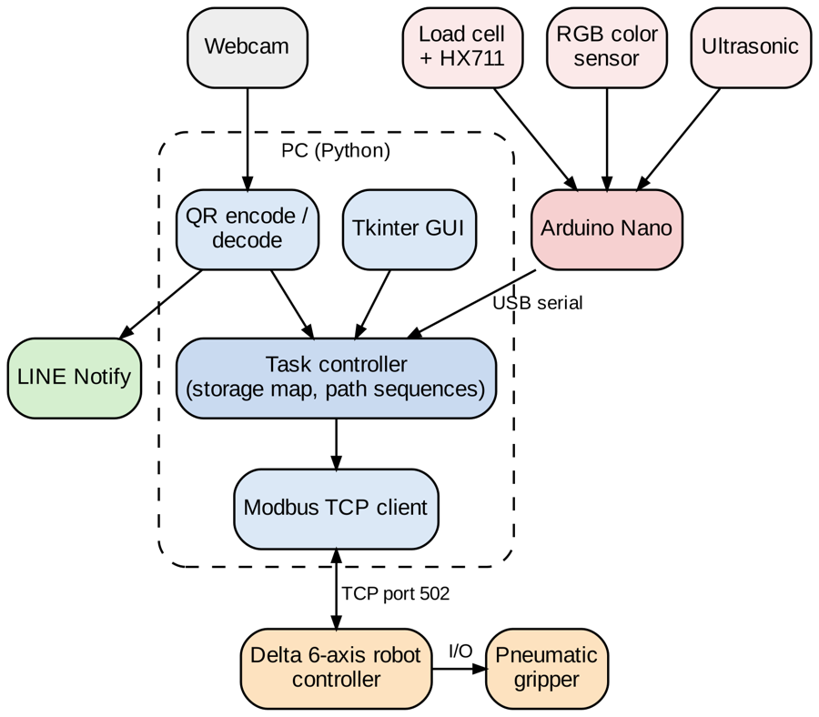
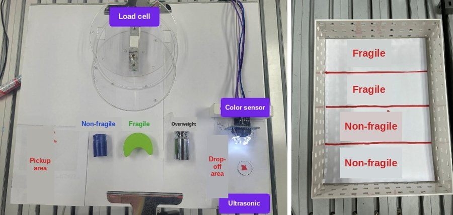
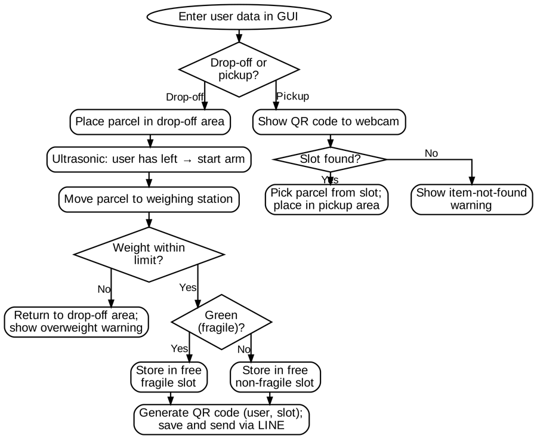
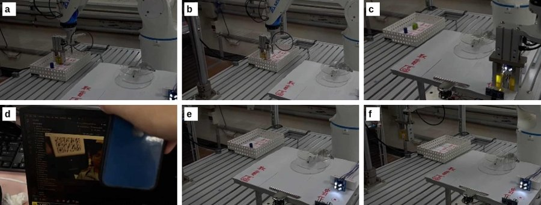

Automated Parcel Storage and Retrieval with a Six-Axis Robotic Arm

Overview
At a parcel counter, staff spend much of their time sorting parcels, carrying them to shelves and finding them again. We built an unmanned parcel storage system modeled on a convenience-store parcel service. A Delta six-axis arm takes in a parcel, checks it, stores it in a suitable slot and returns it when the customer comes back.
System
Delta's own teaching software could not easily connect to outside devices, so we wrote the whole operating sequence in Python and commanded the arm over Modbus TCP. The same program runs a Tkinter user interface, generates and reads QR codes, sends LINE notifications and reads an Arduino sensor node with three sensors.


Sensing and decisions
- Safety interlock: an ultrasonic sensor starts the arm only after the user's hand has left the work area.
- Overweight check: a load cell rejects parcels over the limit. Averaging 10 samples cut the noise by about 3×, and a 1 g deadband stopped drift from reading as a parcel.
- Fragile sorting: an RGB sensor sends parcels in green packaging to the fragile zone.
Workflow
At drop-off, the arm moves the parcel to the weighing station, rejects it if it is too heavy, and otherwise stores it in a free slot of the right zone. The slot is encoded in a QR code sent to the customer. At pickup, a webcam reads the QR code and the arm brings the parcel to the pickup area. Every move goes up to a safe height, across, and straight down, so the parcel never hits the tray walls or other parcels.

Problem we solved
While the interface waited for the user and the sensors, the robot controller dropped the Modbus connection, and the next arm command failed. We fixed it by opening a fresh Modbus client right after the sensors are read and just before each arm command, so every motion starts on a live link.
Results
- Fragile and non-fragile parcels were weighed, sorted and stored in the correct zones.
- The overweight parcel was detected and returned to the drop-off area.
- At pickup, the arm retrieved the right parcel from its QR code.
- The whole drop-off, sorting, storage and pickup cycle ran with no manual handling, on a hardware budget of about US$30.
